11Dateien
Alles liegt fürSie bereit.
Was für den Entwurf neu entstanden ist, liegt hier sortiert in sechs Ordnern. Sie können jede Datei ansehen und herunterladen.


01Unterlagen
Ihre Karten im neuen Satz, jede als PDF.
02Drucksachen
Vierundzwanzig Drucksachen, vom Gutschein für beide Häuser bis zur Platzkarte, jede als PDF.
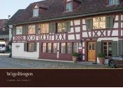
Ansichtskarten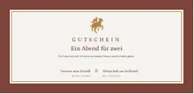
Gutschein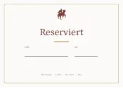
Tischkarte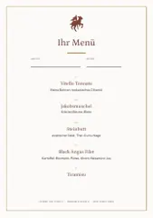
Menükarte für Ihre Feier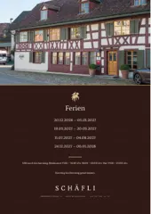
Aushang Ferien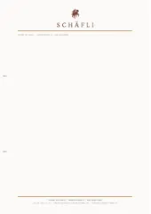
Briefpapier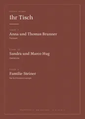
Tischplan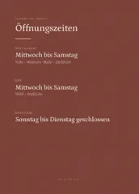
Aushang Öffnungszeiten- Karte für die Heimfahrt
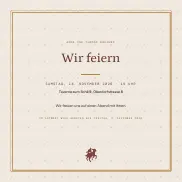
Einladung zur Feier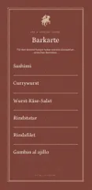
Barkarte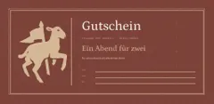
Gutschein für einen Abend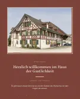
Beitrag für Instagram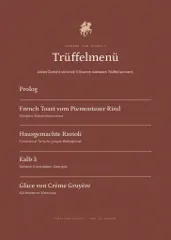
Trüffelmenü- Mittagsmenü
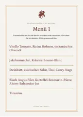
Menüvorschlag für Gruppen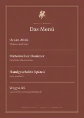
Das Menü des Abends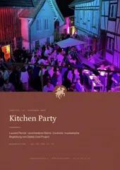
Plakat Kitchen Party- Postkarte Riegelhaus
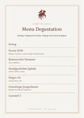
Menu Degustation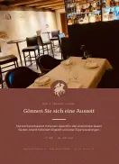
Tischaufsteller Bar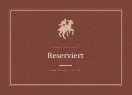
Reserviert, mit Namen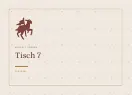
Tischkarte Festsaal- Platzkarte
03Zigarrenbinden
Der Druckbogen mit Schnittlinien, jedes Stück einzeln und alle als Bild.
04Zeichen
Das Lamm und das Wappen als Zeichnung, die in jeder Grösse scharf bleibt.


05Ansichten der neuen Website
Jede Seite des Entwurfs als Bild, am Rechner und am Handy.
06Instagram
Die 24 Beiträge in voller Grösse, das Profilbild und die Texte dazu.

07Sticker
Der Druckbogen A3 und jeder der 24 Sticker einzeln als Bild.
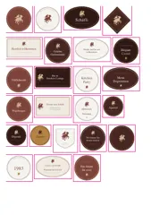
Druckbogen A3 mit allen Stickern- Das Siegel
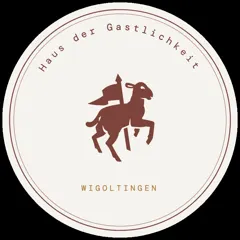
Haus der Gastlichkeit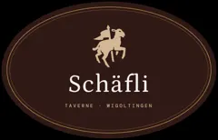
Der Name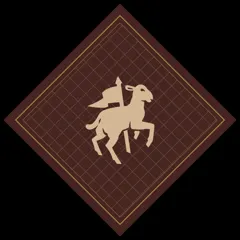
Die Brüstung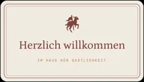
Herzlich willkommen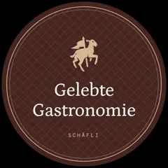
Gelebte Gastronomie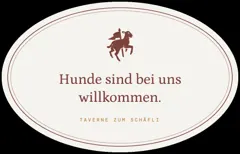
Hunde willkommen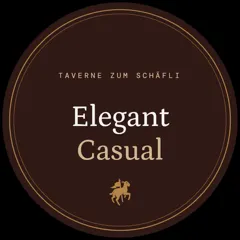
Elegant, Casual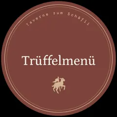
Trüffelmenü- Bar & Smokers Lounge
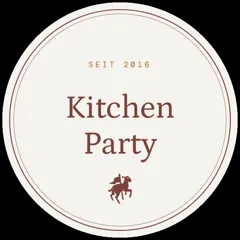
Kitchen Party- Menu Degustation
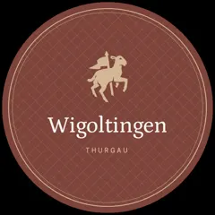
Wigoltingen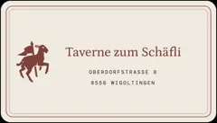
Die Adresse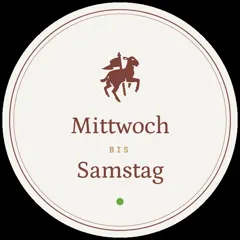
Die Tage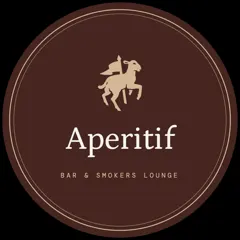
Aperitif- Digestif
- Zigarre
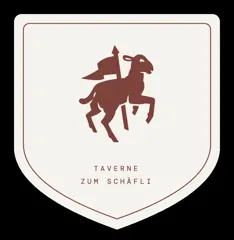
Das Wirtshausschild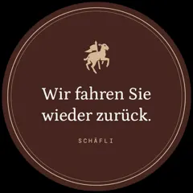
Wir fahren Sie zurück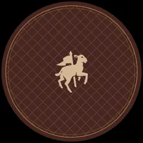
Die Tapete- Seit 1983
- Zwei Häuser
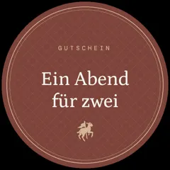
Ein Abend für zwei
08Mails
Die 12 Mails im Kleid der neuen Seite, jede als eigene Seite.
Fehlt Ihnen eine Datei oder ein Format, lege ich sie gern dazu.